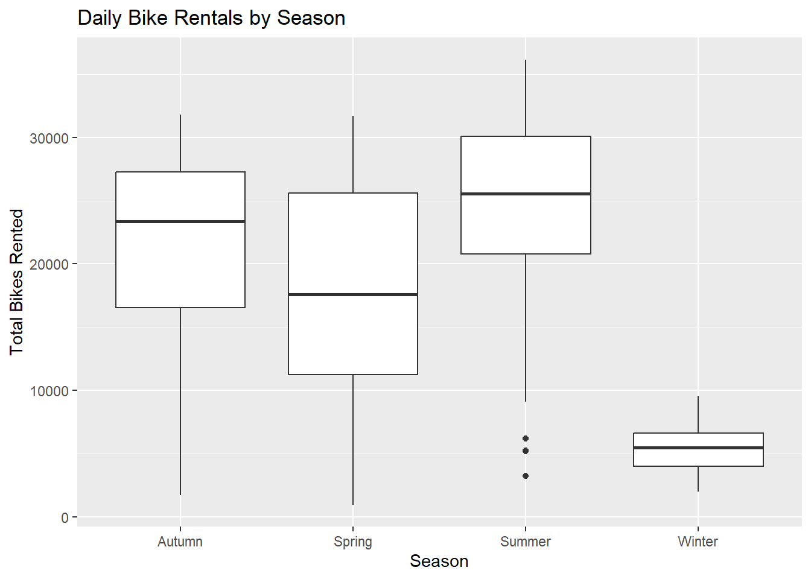

In this homework, we try to see if we can predict how many bikes get rented in Seoul on a given day using the weather and the type of day. We build three multiple linear regression (MLR) models and check which one gives the best predictions. To do this, we first read in the data, explore and clean it, and summarize it to one row per day. Then we split it into training and test sets, compare the three models, and fit the best one on the entire data set.
library(tidyverse)
── Attaching core tidyverse packages ──────────────────────── tidyverse 2.0.0 ──
✔ dplyr 1.2.1 ✔ readr 2.2.0
✔ forcats 1.0.1 ✔ stringr 1.6.0
✔ ggplot2 4.0.3 ✔ tibble 3.3.1
✔ lubridate 1.9.5 ✔ tidyr 1.3.2
✔ purrr 1.2.2
── Conflicts ────────────────────────────────────────── tidyverse_conflicts() ──
✖ dplyr::filter() masks stats::filter()
✖ dplyr::lag() masks stats::lag()
ℹ Use the conflicted package (<http://conflicted.r-lib.org/>) to force all conflicts to become errors
Rows: 8760 Columns: 14
── Column specification ────────────────────────────────────────────────────────
Delimiter: ","
chr (4): Date, Seasons, Holiday, Functioning Day
dbl (10): Rented Bike Count, Hour, Temperature(°C), Humidity(%), Wind speed ...
ℹ Use `spec()` to retrieve the full column specification for this data.
ℹ Specify the column types or set `show_col_types = FALSE` to quiet this message.
First we checked each column for missing values. There are no missing values in the data set
bike_data |>is.na() |>colSums()
Date Rented Bike Count Hour
0 0 0
Temperature(°C) Humidity(%) Wind speed (m/s)
0 0 0
Visibility (10m) Dew point temperature(°C) Solar Radiation (MJ/m2)
0 0 0
Rainfall(mm) Snowfall (cm) Seasons
0 0 0
Holiday Functioning Day
0 0
Step 2: check column types and values
Next we looked at the column types and the values in each column. The numeric columns have reasonable ranges like rainfall and snowfall are never negative. The Date column is stored as character instead of a date, and Seasons, Holiday, and Functioning Day are character variables, so we fix these next.
Rented Bike Count Hour Temperature(°C) Humidity(%)
Min. : 0.0 Min. : 0.00 Min. :-17.80 Min. : 0.00
1st Qu.: 191.0 1st Qu.: 5.75 1st Qu.: 3.50 1st Qu.:42.00
Median : 504.5 Median :11.50 Median : 13.70 Median :57.00
Mean : 704.6 Mean :11.50 Mean : 12.88 Mean :58.23
3rd Qu.:1065.2 3rd Qu.:17.25 3rd Qu.: 22.50 3rd Qu.:74.00
Max. :3556.0 Max. :23.00 Max. : 39.40 Max. :98.00
Wind speed (m/s) Visibility (10m) Dew point temperature(°C)
Min. :0.000 Min. : 27 Min. :-30.600
1st Qu.:0.900 1st Qu.: 940 1st Qu.: -4.700
Median :1.500 Median :1698 Median : 5.100
Mean :1.725 Mean :1437 Mean : 4.074
3rd Qu.:2.300 3rd Qu.:2000 3rd Qu.: 14.800
Max. :7.400 Max. :2000 Max. : 27.200
Solar Radiation (MJ/m2) Rainfall(mm) Snowfall (cm)
Min. :0.0000 Min. : 0.0000 Min. :0.00000
1st Qu.:0.0000 1st Qu.: 0.0000 1st Qu.:0.00000
Median :0.0100 Median : 0.0000 Median :0.00000
Mean :0.5691 Mean : 0.1487 Mean :0.07507
3rd Qu.:0.9300 3rd Qu.: 0.0000 3rd Qu.:0.00000
Max. :3.5200 Max. :35.0000 Max. :8.80000
unique(bike_data$Seasons)
[1] "Winter" "Spring" "Summer" "Autumn"
unique(bike_data$Holiday)
[1] "No Holiday" "Holiday"
unique(bike_data$`Functioning Day`)
[1] "Yes" "No"
Steps 3-5: rename, fix the date, make factors
We then renamed the columns so they are easier to type, since the original names have spaces and symbols. Then we converted the date column to an actual date with dmy(), since the dates are in day/month/year format, and turned seasons, holiday, and functioning_day into factors
Step 6: summary stats, overall and by each categorical variable
Here we look at summary statistics for the bike count overall and across each categorical variable. Summer has the highest average hourly rentals and Winter has the lowest. When functioning_day is “No,” the bike count is always 0, because the system was not operating during those hours. Since these rows would make it look like there was zero demand, we removed them and kept only the functioning hours.
To simplify the analysis, we collapsed the hourly data so each day has one row. We summed bike count, rainfall, and snowfall since those are daily totals, and took the mean of the other weather variables. This leaves 353 days.
`summarise()` has regrouped the output.
ℹ Summaries were computed grouped by date, seasons, and holiday.
ℹ Output is grouped by date and seasons.
ℹ Use `summarise(.groups = "drop_last")` to silence this message.
ℹ Use `summarise(.by = c(date, seasons, holiday))` for per-operation grouping
(`?dplyr::dplyr_by`) instead.
ggplot(bike_data, aes(x = temp, y = bike_count, color = seasons)) +geom_point() +labs(title ="Daily Bike Rentals vs. Temperature",x ="Average Temperature (C)", y ="Total Bikes Rented")
ggplot(bike_data, aes(x = seasons, y = bike_count)) +geom_boxplot() +labs(title ="Daily Bike Rentals by Season",x ="Season", y ="Total Bikes Rented")

ggplot(bike_data, aes(x = holiday, y = bike_count)) +geom_boxplot() +labs(title ="Daily Bike Rentals by Holiday",x ="Holiday", y ="Total Bikes Rented")
Split The Data
We split the data into a training set (75%) and test set (25%), stratifying on seasons so each season is represented in about the same proportion in both sets. We set a seed so the split is the same each time the document is rendered.
Step 2: Standardize using the TRAINING mean and sd
We standardized the numeric weather variables by subtracting the training set mean and dividing by the training set standard deviation. The test set was standardized with the training set mean and standard deviation too, since the model should not use any information from the test data.
We fit three models. Model 1 includes all standardized numeric variables plus seasons, holiday, and day type. Model 2 adds interactions between seasons and holiday, seasons and temperature, and temperature and rainfall. Model 3 adds squared terms for temperature and humidity on top of what we had for Model 2.
# A tibble: 3 × 2
model test_rmse
<chr> <dbl>
1 Model 1 4205.
2 Model 2 3098.
3 Model 3 3059.
Model 3 wins with the lowest test RMSE about 3,059 meaning its predictions were typically off by about 3,060 bikes per day.
Final Model
Since Model 3 had the lowest test RMSE, we refit it on the entire data set. This time we standardized the numeric variables using the mean and standard deviation of all the data, and created the weekday/weekend variable again.
In conclusion, we find that adding interactions improved the test RMSE a lot from about 4,205 to 3,098, and adding squared terms improved it slightly more (about 3,059), so Model 3 was chosen as the final model.The effect of temperature depends on the season. In autumn, warmer days increase rentals, but in summer the temperature interaction is large and negative, so hotter summer days actually reduce rentals. Overall, temperature, season, rainfall, and whether it was a weekend were important for predicting how many bikes are rented each day